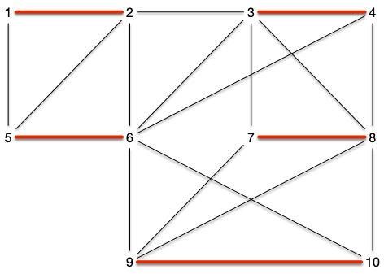
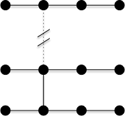
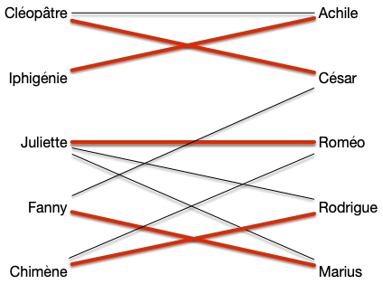

Problème du couplage dans un graphe
Le problème de couplage peut être défini ainsi :
Définition
Soit $G=(V, E)$ un graphe. Un couplage est un ensemble $M \subseteq E$ tel que si $xy, x'y' \in E$ alors $xy \cap x'y' = \varnothing$ (le degré de tout sommet du graphe $G'=(V, M)$ est strictement inférieur à 2).
Un sommet $x$ est :
- libre s'il n'est pas extrémité d'une arête de $M$.
- couvert s'il est extrémité d'une arête de $M$.
Dans un couplage tout extrémité d'une arête n'apparaît qu'une seule fois. Par exemple, le graphe ci-dessous :

Admet l'ensemble des arêtes rouges comme couplage :

On définit plusieurs types de couplages selon le graphe :
Définition
Soit $G=(V, E)$ un graphe. Un couplage $M$ est dit :
- maximal s'il n'existe pas de couplage $M'$ l'incluant (toute arête de $G$ possède une extrémité co;;une avec une arête de $M$)
- maximum s'il n'existe pas de couplage $M'$ tels que $\vert M'\vert > \vert M\vert$
- parfait si pour tout sommet de $V$ il existe une arête de $M$ l'ayant comme extrémité. Un couplage parfait ne peut exister que s'il y a un nombre pair de sommet et à forcément $\vert V \vert/2$ arêtes.
Définition
Pour tout graphe $G=(V, E)$, on note $\nu(G)$ le no,bre d'arête de ses couplages maximum.
Les trois types de couplages sont bien distincts. Le couplage de la figure précédente était maximal (toute arête du graphe à un sommet commun avec une arête du couplage), mais il n'est pas maximum. Il possède en effet un couplage parfait :

Montrez que le graphe précédent admet un autre couplage parfait.
solution
solution

Algorithme glouton
Le problème du couplage admet un algorithme glouton très simple permettant de trouver un couplage acceptable puisqu'à performance garantie :
algorithme couplage_glouton(G: Graphe<Sommet>) →
M :=
M ← ∅
pour chaque arête xy de G:
si x et y ne sont pas couvert par M:
M ← M ∪ {xy}Cet algorithme est très simple et il est clair qu'il peut trouver un couplage maximum s'il prend les arêtes dans un bon ordre. Mais même si l'ordre est quelconque il ne peut pas être si mauvais que ça :
Proposition
L'algorithme précédent est à performance garantie de $1/2$ (il a au pire 2 fois moins d'arêtes qu'un couplage maximum).
preuve
preuve
Il est tout d'abord clair que le couplage $M$ obtenu par l'algorithme est maximal puisque toute arête rejetée possède une de ses extrémité couverte par $M$. De là, si $M^\star$ un couplage maximum alors chacune de ses arêtes a au moins 1 de ses sommets couvert par $M$ (soit l'arête est dans $M$ soit elle a été rejetée au cours de l'algorithme).
Donc au moins la moitié ($\frac{1}{2}$) des sommets couverts par $M^\star$ ($2 \cdot \vert M^\star \vert$) sont couverts par les sommets de $M$ ($2\cdot \vert M \vert$), on a ainsi $\frac{1}{2}\cdot(2 \cdot \vert M^\star \vert) \leq 2 \cdot \vert M \vert$ ce qui conclut la preuve.
L'exercice suivant montre que la 1/2 performance garantie est atteinte quelque soit la taille du graphe.
Montrez que quelques soit $n$, il existe un graphe connexe à plus de $n$ sommets tel que l'algorithme peut trouver 2 fois moins d'arête que son couplage maximum.
corrigé
corrigé
On peut prendre un graphe qui est une successions d chemins de longueur 3 comme celui-ci :

Si l'algorithme prend systématiquement l'arête au milieu du chemin, son couplage sera de taille deux fois plus petite que le couplage prenant les extrémités de chaque chemin.
Cet algorithme glouton montre que si l'on cherche rapidement une solution (l'algorithme est linéaire en la taille du graphe) on peut le faire sans grand risque de tomber trop à côté de la solution optimale.
Exemples
Trouver des binômes
Dans les exercices de modélisation par des flots, le problème du transport amoureux permettait de résoudre un problème de couplage. Marier le plus de héros de roman revient à trouver un couplage maximum dans le graphe des affinités (une arête entre deux héros s'ils s'apprécient) :

Et on obtenant le couplage parfait suivant :

On a cependant vu que cette modélisation ne fonctionne que si l'on a deux populations distinctes (ici les garçons et les filles) à coupler. Si ce n'est pas le cas (coupler 2 garçons ou deux filles ensembles) on ne peut plus modéliser le problème de couplage par des flots.
On verra dans ce cours que c'est polynomialement facile à faire même si l'algorithme ne l'est pas tant que ça (facile).
Tournois de sport
Dans un tournoi de sports où deux équipes s'affrontent tout à tour, il est nécessaire de trouver un couplage des différentes équipes pour une ronde, mais également que toute équipe ne rencontre pas une équipe déjà vue. Il faut donc ici trouver non pas 1 couplage parfait (ce qui serait facile) mais $n-1$ tous différents. On verra plus tard que l'on peut modéliser ce problème comme un problème de coloration d'arêtes du graphe complet, mais ici voyons juste un algorithme pour résoudre.
L'algorithme est le suivant, pour $n$ pair :
- $n$ équipes numérotées de 0 à $n-1$
- $n-1$ rondes numérotées de 0 à $n-2$
Les deux équipes $i < j$ jouent ensembles à la ronde $r$ si :
- $r = 2i \mathbin{\small\%} (n-1)$ et $j = n-1$
- $r = i + j \mathbin{\small\%} (n-1)$ et $j < n-1$
L'équipe $i$ est à domicile si :
- $2i < n-1$ $j = n-1$
- $i + j$ est impair et $j < n-1$
Si $j = n-1$ Ok. Elle va être à domicile une fois sur 2 et va jouer avec l'équipe $i$ à la ronde $i$. Sinon, Ok aussi :
- $a+x \mathbin{\small\%} (n-1) = K$ a une unique solutions pour $x$ quelque soit $0\leq a, K \leq n-2$ : on a bien un couplage max à chaque ronde et chaque équipe va affronter une équipe différente à chaque ronde
- $i+j \mathbin{\small\%} (n-1) = K$ a $n-1$ solutions possible pour $0\leq i < j < n-1$ le couplage est maximum à chaque ronde
Pour les match impair, l'équipe $n-1$ fait office d'équipe fantôme : les équipe qui devraient l'affronter ne jouent pas.
TBD exemple à 6
| i | j< 5 | i + j | i à domicile |
|---|---|---|---|
| 0 | 1 | 1 | OUI |
| 0 | 2 | 2 | NON |
| 0 | 3 | 3 | OUI |
| 0 | 4 | 4 | NON |
| 1 | 2 | 3 | OUI |
| 1 | 3 | 4 | NON |
| 1 | 4 | 0 | OUI |
| 2 | 3 | 0 | OUI |
| 2 | 4 | 1 | NON |
| 3 | 4 | 2 | OUI |
Et pour l'équipe $n-1$ :
| i | j=5 | 2i | i à domicile |
|---|---|---|---|
| 0 | 5 | 0 | OUI |
| 1 | 5 | 2 | OUI |
| 2 | 5 | 4 | OUI |
| 3 | 5 | 1 | NON |
| 4 | 5 | 3 | NON |
Ce qui donne par ronde avec l'équipe à domicile en premier:
- ronde 0 : (1, 4), (2, 3), (0, 5)
- ronde 1 : (0, 1), (4, 2), (5, 3)
- ronde 2 : (2, 0), (3, 4), (1, 5)
- ronde 3 : (0, 3), (1, 2), (5, 4)
- ronde 4 : (4, 0), (3, 1), (2, 5)